공조냉동기계기능사 (2013-04-14 기출문제)
1과목: 공조냉동안전관리
1. 신규 검사에 합격된 냉동용 특정설비의 각인 사항과 그 기호의 연결이 올바르게 된 것은?
- 용기의 질량 : TM
- 내용적 : TV
- 최고 사용 압력 : FT
- 내압 시험 압력 : TP
(정답률: 89%)

2. 보일러 취급 부주의로 작업자가 화상을 입었을 때 응급처치 방법으로 적당하지 않은 것은?
- 냉수를 이용하여 화상부의 화기를 빼도록 한다.
- 물집이 생겼으면 터뜨리지 말고 그냥 둔다.
- 기계유나 변압기유를 바른다.
- 상처부위를 깨끗이 소독한 다음 상처를 보호한다.
(정답률: 95%)
3. 다음 중 보일러의 부식원인과 가장 관계가 적은 것은?
- 온수에 불순물이 포함될 때
- 부적당한 급수처리 시
- 더러운 물을 사용 시
- 증기 발생량이 적을 때
(정답률: 89%)
4. 연삭작업 시의 주의 사항이다. 옳지 않은 것은?
- 숫돌은 장착하기 전에 균열이 없는가를 확인한다.
- 작업 시에는 반드시 보호안경을 착용한다.
- 숫돌은 작업개시 전 1분 이상, 숫돌교환 후 3분 이상 시 운전한다.
- 소형 숫돌은 측압에 강하므로 측면을 사용하여 연삭한다.
(정답률: 87%)
5. 안전관리자가 수행하여야 할 직무에 해당되는 내용이 아닌 것은?
- 사업장 생산 활동을 위한 노무배치 및 관리
- 사업장 순회점검·지도 및 조치의 건의
- 산업재해 발생의 원인조사
- 해당 사업장의 안전교육계획의 수립 및 실시
(정답률: 78%)
6. 줄 작업 시 안전수칙에 대한 내용으로 잘못 된 것은?
- 줄 손잡이가 빠졌을 때에는 조심하여 끼운다.
- 줄의 칩은 브러시로 제거한다.
- 줄 작업 시 공작물의 높이는 작업자의 어깨높이 이상으로 하는 것이 좋다.
- 줄은 경도가 높고 취성이 커서 잘 부러지므로 충격을 주지 않는다.
(정답률: 95%)
7. 전기용접 작업 시 주의사항 중 맞지 않는 것은?
- 눈 및 피부를 노출시키지 말 것
- 우천 시 옥외 작업을 하지 말 것
- 용접이 끝나고 슬래그 제거작업 시 보안경과 장갑은 벗고 작업할 것
- 홀더가 가열되면 자연적으로 열이 제거될 수 있도록 할 것
(정답률: 94%)
8. 재해 조사 시 유의할 사항이 아닌 것은?
- 조사자는 주관적이고 공정한 입장을 취한다.
- 조사목적에 무관한 조사는 피한다.
- 목격자나 현장 책임자의 진술을 듣는다.
- 조사는 현장이 변경되기 전에 실시한다.
(정답률: 84%)
9. 물을 소화재로 사용하는 가장 큰 이유는?
- 연소하지 않는다.
- 산소를 잘 흡수한다.
- 기화잠열이 크다.
- 취급하기가 편리하다.
(정답률: 82%)
10. 고온액체, 산, 알카리 화학약품 등의 취급 작업을 할 때 필요 없는 개인 보호구는?
- 모자
- 토시
- 장갑
- 귀마개
(정답률: 91%)
11. 산소 용접토치 취급법에 대한 설명 중 잘못된 것은?
- 용접 팁을 흙바닥에 놓아서는 안 된다.
- 작업 목적에 따라서 팁을 선정한다.
- 토치는 기름으로 닦아 보관해 두어야 한다.
- 점화전에 토치의 이상 유무를 검사한다.
(정답률: 95%)
12. 진공시험의 목적을 설명한 것으로 옳지 않은 것은?
- 장치의 누설 여부를 확인
- 장치내 이물질이나 수분제거
- 냉매를 충전하기 전에 불응축 가스배출
- 장치내 냉매의 온도변화 측정
(정답률: 73%)
13. 보일러 사고원인 중 취급상의 원인이 아닌 것은?
- 저수위
- 압력초과
- 구조불량
- 역화
(정답률: 76%)
14. 전동공구 작업 시 감전의 위험성을 방지하기 위해 해야 하는 조치는?
- 단전
- 감지
- 단락
- 접지
(정답률: 90%)
15. 방진 마스크가 갖추어야 할 조건으로 적당한 것은?
- 안면에 밀착성이 좋아야 한다.
- 여과효율은 불량해야 한다.
- 흡기, 배기 저항이 커야 한다.
- 시야는 가능한 한 좁아야 한다.
(정답률: 85%)
2과목: 냉동기계
16. 글랜드 패킹의 종류가 아닌 것은?
- 바운드 패킹
- 석면 각형 패킹
- 아마존 패킹
- 몰드 패킹
(정답률: 52%)
17. 공비 혼합 냉매가 아닌 것은?
- 프레온 500
- 프레온 501
- 프레온 502
- 프레온 152a
(정답률: 86%)
18. 압축기 보호장치에 해당 되는 것은?
- 냉각수 조절 밸브
- 유압보호 스위치
- 증발압력 조절 밸브
- 응축기용 팬 콘트롤
(정답률: 65%)
19. 냉동사이클에서 응축온도를 일정하게 하고, 압축기 흡입가스의 상태를 건포화 증기로 할 때 증발온도를 상승시키면 어떤 결과가 나타나는가?
- 압축비 증가
- 냉동효과 감소
- 성적계수 상승
- 압축일량 증가
(정답률: 62%)
20. 다음 그림은 냉동용 그림기호(KS B 0063)에서 무엇을 표시하는가?
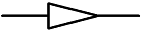
- 리듀서
- 디스트리뷰터
- 줄임 플랜지
- 플러그
(정답률: 83%)
21. 압력계의 지침이 9.80 cmHgv였다면 절대압력은 약 몇 kgf/cm2a인가?
- 0.9
- 1.3
- 2.1
- 3.5
(정답률: 45%)
22. 2단 압축방식을 채용하는 이유로서 맞지 않는 것은?
- 압축기의 체적효율과 압축효율 증가를 위해
- 압축비를 감소시켜서 냉동능력을 감소하기 위해
- 압축비를 감소시켜서 압축기의 과열을 방지하기 위해
- 냉동기유의 변질과 압축기 수명단축 예방을 위해
(정답률: 77%)
23. 100000 kcal의 열로 0℃ 의 얼음 약 몇 kg을 용해시킬 수 있는가?
- 1000kg
- 1⑤0kg
- 1150kg
- 1250kg
(정답률: 65%)
24. 교류 전압계의 일반적인 지시값은 ?
- 실효값
- 최대값
- 평균값
- 순시값
(정답률: 74%)
25. 만액식 냉각기에 있어서 냉매측의 열전달률을 좋게 하기 위한 방법이 아닌 것은?
- 냉각관이 액 냉매에 접촉하거나 잠겨 있을 것
- 관 간격이 좁을 것
- 유막이 존재하지 않을 것
- 관면이 매끄러울 것
(정답률: 65%)
26. 모리엘(Mollier) 선도에서 등온선과 등압선이 서로 평행한 구역은?
- 액체 구역
- 습증기 구역
- 건증기 구역
- 평행인 구역은 없다.
(정답률: 72%)
27. 압축기의 과열원인이 아닌 것은?
- 냉매 부족
- 밸브 누설
- 윤활 불량
- 냉각수 과냉
(정답률: 79%)
28. 다음 그림은 8핀 타이머의 내부회로도이다. ⑤ - ⑧ 접점을 옳게 표시한 것은?
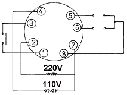
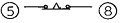
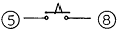
(정답률: 66%)
29. 냉동사이클의 변화에서 증발온도가 일정할 때 응축온도가 상승할 경우의 영향으로 맞는 것은?
- 성적계수 증대
- 압축일량 감소
- 토출가스 온도 저하
- 플래쉬(flash)가스 발생량 증가
(정답률: 57%)
30. 관의 결합방식 표시방법에서 결합방식의 종류와 그림기호가 틀린 것은?
- 일반 :
- 플랜지식 :
- 용접식 :
- 소켓식 :
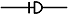
(정답률: 69%)
31. 강관의 전기용접 접합 시의 특징(가스용접에 비해)으로 맞는 것은?
- 유해 광선의 발생이 적다.
- 용접속도가 빠르고 변형이 적다.
- 박판용접에 적당하다.
- 열량조절이 비교적 자유롭다.
(정답률: 79%)
32. 물 - LiBr 계 흡수식 냉동기의 순환 과정이 옳은 것은?
- 발생기 → 응축기 → 흡수기 → 증발기
- 발생기 → 응축기 → 증발기 → 흡수기
- 흡수기 → 응축기 → 증발기 → 발생기
- 흡수기 → 응축기 → 발생기 → 증발기
(정답률: 67%)
33. 냉매에 관한 설명 중 올바른 것은?
- 암모니아 냉매는 증발잠열이 크고 냉동효과가 좋으나 구리와 그 합금을 부식시킨다.
- 일반적으로 특정 냉매용으로 설계된 장치에도 다른 냉매를 그대로 사용할 수 있다.
- 프레온 냉매의 누설 시 리트머스 시험지가 청색으로 변한다.
- 암모니아 냉매의 누설검사는 헤라이드 토오치를 이용하여 검사한다.
(정답률: 71%)
34. 다음의 모리엘(Mollier) 선도를 참고로 했을 때 3냉동톤(RT)의 냉동기 냉매 순환량은 약 얼마인가?
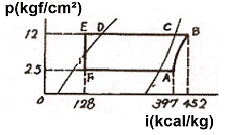
- 37.0kg/h
- 51.3kg/h
- 49.4kg/h
- 67.7kg/h
(정답률: 40%)
35. 다음 그림과 같은 회로의 합성저항은 얼마인가?
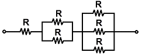
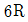
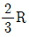
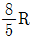
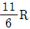
(정답률: 68%)
36. 온도가 일정할 때 가스압력과 체적은 어떤 관계가 있는가?
- 체적은 압력에 반비례한다.
- 체적은 압력에 비례한다.
- 체적은 압력과 무관하다.
- 체적은 압력과 제곱 비례한다.
(정답률: 58%)
37. 저압수액기와 액펌프의 설치 위치로 가장 적당한 것은?
- 저압수액기 위치를 액펌프보다 약 1.2m 정도 높게 한다.
- 응축기 높이와 일정하게 한다.
- 액펌프와 저압 수액기 위치를 같게 한다.
- 저압 수액기를 액펌프보다 최소한 5m 낮게 한다.
(정답률: 69%)
38. 다음 그림과 같은 강관 이음부(A)에 적합하게 사용될 이음쇠로 맞는 것은?
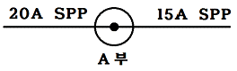
- 동경 소켓
- 이경 소켓
- 니플
- 유니언
(정답률: 79%)
39. 프레온 냉동장치에서 오일이 압력과 온도에 상당하는 양의 냉매를 용해하고 있다가 압축기 기동 시 오일과 냉매가 급격히 분리되어 크랭크 케이스내의 유면이 약동하고 심하게 거품이 일어나는 현상은?
- 오일 해머
- 동 부착
- 에멀죤
- 오일 포밍
(정답률: 85%)
40. 자동제어장치의 구성에서 동작신호를 만드는 부분으로 맞는 것은?
- 조절부
- 조작부
- 검출부
- 제어부
(정답률: 50%)
41. 드라이아이스(고체CO2)는 어떤 열을 이용하여 냉동효과를 얻는가?
- 승화잠열
- 응축잠열
- 증발잠열
- 융해잠열
(정답률: 76%)
42. 브라인의 구비조건으로 틀린 것은?
- 비열이 클 것
- 점성이 클 것
- 전열작용이 좋을 것
- 응고점이 낮을 것
(정답률: 72%)
43. 냉동장치에 관한 설명 중 올바른 것은?
- 응축기에서 방출하는 열량은 증발기에서 흡수하는 열량과 같다.
- 응축기의 냉각수 출구 온도는 응축온도보다 낮다.
- 증발기에서 방출하는 열량은 응축기에서 흡수하는 열량보다 크다.
- 증발기의 냉각수 출구온도는 응축온도보다 높다.
(정답률: 48%)
44. 냉동기의 냉동능력이 24000kcal/h, 압축일 5kcal/kg, 응축열량이 35kcal/kg 일 경우 냉매 순환량은 얼마인가?
- 600kg/h
- 800kg/h
- 700kg/h
- 4000kg/h
(정답률: 57%)
45. 동관의 분기이음 시 주관에는 지관보다 얼마정도의 큰 구멍을 뚫고 이음 하는가?
- 8 ~ 9㎜
- 6 ~ 7㎜
- 3 ~ 5㎜
- 1 ~ 2㎜
(정답률: 61%)
3과목: 공기조화
46. 밀폐식 수열원 히트 펌프 유닛방식의 설명으로 옳지 않은 것은?
- 유닛마다 제어기구가 있어 개별운전이 가능하다.
- 냉·난방부하를 동시에 발생하는 건물에서 열회수가 용이하다.
- 외기냉방이 가능하다.
- 중앙 기계실에 냉동기가 필요하지 않아 설치면적상 유리하다.
(정답률: 71%)
47. 송풍기의 축동력 산출시 필요한 값이 아닌 것은?
- 송풍량
- 덕트의 길이
- 전압효율
- 전압
(정답률: 67%)
48. 환기횟수를 시간당 0.6회로 할 경우에 체적이 2000m3인 실의 환기량은 얼마인가?
- 800m3/h
- 1000m3/h
- 1200m3/h
- 1440m3/h
(정답률: 67%)
49. 설치가 쉽고 설치 면적도 적으며 소규모 난방에 많이 사용되는 보일러는?
- 입형 보일러
- 노통 보일러
- 연관 보일러
- 수관 보일러
(정답률: 66%)
50. 수조내의 물이 진동자의 진동에 의해 수면에서 작은 물방울이 발생되어 가습되는 가습기의 종류는?
- 초음파식
- 원심식
- 전극식
- 증발식
(정답률: 77%)
51. 덕트설계 시 고려사항으로 거리가 먼 것은?
- 송풍량
- 덕트방식과 경로
- 덕트내 공기의 엔탈피
- 취출구 및 흡입구 수량
(정답률: 62%)
52. 5℃ 인 350kg/h의 공기를 65℃ 가 될 때까지 가열 하는 경우 필요한 열량은 몇 kcal/h 인가? (단, 공기의 비열은 0.24 kcal/kg℃ 이다.)
- 4464
- 5040
- 6564
- 6590
(정답률: 60%)
53. 공조방식을 개별식과 중앙식으로 구분하였을 때 중앙식에 해당되는 것은?
- 패키지 유닛방식
- 멀티 유닛형 룸쿨러방식
- 팬 코일 유닛방식(덕트병용)
- 룸쿨러방식
(정답률: 67%)
54. 공기를 냉각하였을 때 증가되는 것은?
- 습구온도
- 상대습도
- 건구온도
- 엔탈피
(정답률: 59%)
55. 온풍난방에 대한 설명으로 옳지 않은 것은?
- 예열시간이 짧고 간헐 운전이 가능하다.
- 실내 온도분포가 균일하여 쾌적성이 좋다.
- 방열기나 배관 등의 시설이 필요 없어 설비비가 비교적 싸다.
- 송풍기로 인한 소음이 발생 할 수 있다.
(정답률: 66%)
56. 보건용 공기조화가 적용되는 장소가 아닌 것은?
- 병원
- 극장
- 전산실
- 호텔
(정답률: 86%)
57. 회전식 전열교환기의 특징 설명으로 옳지 않은 것은?
- 로우터의 상부에 외기공기를 통과하고 하부에 실내공기가 통과한다.
- 배기공기는 오염물질이 포함되지 않으므로 필터를 설치할 필요가 없다.
- 일반적으로 효율은 로우터 회전수가 5rpm 이상에서는 대체로 일정하고 10rpm 전후 회전수가 사용된다.
- 로우터를 회전시키면서 실내공기의 배기공기와 외기공기를 열교환 한다.
(정답률: 78%)
58. 다음 용어 중 환기를 계획할 때 실내 허용 오염도의 한계를 의미하는 것은?
- 불쾌지수
- 유효온도
- 쾌감온도
- 서한도
(정답률: 64%)
59. 펌프에서 흡입양정이 크거나 회전수가 고속일 경우 흡입관의 마찰저항 증가에 따른 압력강하로 수중에 다수의 기포가 발생되고 소음 및 진동이 일어나는 현상은?
- 플라이밍 현상
- 캐비테이션 현상
- 수격 현상
- 포밍 현상
(정답률: 66%)
60. 증기난방의 환수관 배관 방식에서 환수주관을 보일러의 수면보다 높은 위치에 배관하는 것은?
- 진공 환수식
- 강제 환수식
- 습식 환수식
- 건식 환수식
(정답률: 61%)